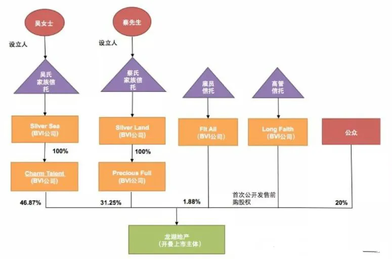

临阵换帅
双十一活动开始了，感兴趣的读者可以戳： 发生了点意外 。
今天把昨晚的文章补上。
NO. 1｜壹
昨天，龙湖大跌超11%，晚间，龙湖集团公告称：58岁的吴亚军“因年龄及身体的原因”，辞任董事会主席等所有职务。
如果是两三年前行业平稳，或等龙湖走出风波后，吴阿姨再这么做，那么丝毫没有任何问题。
核心问题在于，吴阿姨 选择的时间节点和时机不对 。
地产江湖多风雨，龙湖也不能置身事外。往年风调雨顺，今年在狂风暴雨中飘摇，这时候撤退，确实不是一个好的选择。
更何况，吴亚军 通过离岸信托持有龙湖股份 ，和许家印的架构类似，可谓 收益尽享，而风险不沾身 。
两军交战，一方的侧翼刚被敌军轻骑冲锋过，落败的迹象隐现。这时主帅对先锋官说“你来指挥全军，我身体不舒服，去拉个粑粑”。
并通过大喇叭（众多自媒体）向全军喊话，称先锋官跟随他多年，深得他的兵法精髓，且有青出于蓝的资质。
你让众将士心里怎么想？谁敢保证危急时刻，主帅真的只是身体原因先去拉个粑粑，而不是临阵逃脱？
竖立的军旗上写的是主帅的姓氏，主帅是这支军队的标志和灵魂。同样，吴亚军也是龙湖的重要标志性人物。
现在的龙湖，很安全吗？独立于行业之外且走出困境了吗？显然没有。这时临阵换帅，怎么看都不是一个好的选择。
融创换保险柜锁芯、划走共管账户资金的事，和龙湖换帅的 时机选择 一样，都是败笔。
再怎么解释，也是苍白无力，曾经的我们，也深信过这些所谓的”辟谣“，可结果呢？
许家印“金蝉脱壳式”撤退、恒大高管“开除式”撤退、欧总荣（黄仙枝）“移花接木”撤退、各大房企不停地辟谣，又不停地被打脸。
我们为什么不相信辟谣？因为 过往的太多劣迹已经让我们失去了信任 ，掰手指头能算出来的利弊得失，简单的就像小学数学题，却用拙劣的谎言去掩盖。
听国人讲话，不要听他讲了什么，要听他没讲什么。
NO. 2｜贰
这时候，各大房企的年轻接任者们，更多是一种工具人的作用，再怎么被鼓吹水平高超，也摆脱不了工具人的标签。
以前的房企老板，之所以“礼贤下士”，不是因为人品，也不是因为性格，而 是因为他自身的需求 （发展壮大企业等），所谓千金买骨。
因为，这个世界围绕着需求转，而不是道理。
所以，想成为那块马骨，你不仅要自身的条件和能力刚好能凑得上，还要弄清楚人家老板的目的究竟是什么，想布什么局。你能帮他完成这个局。
也就是，你得有价值，能成事。太阳之所以万众敬仰，是因为万物生长靠太阳，太阳带来了价值，帮万物演绎了生命周期。
而想要让别人听你的，有两条路：
要么像马云一样，直接付钱。付钱给甄子丹李连杰吴京，想怎么打他们，就怎么打，反正怎么打都赢。
要么人家听你的，能挣到名与利，就像当下的一些职业经理人，虽然背负了较大的风险，但看不见的水面下，能拿到的回报无疑也是丰厚的。
对于房企来说，人才嘛，人才的第一准则就是识时务。
对于这部分职业经理人来说，是非对错，有时候反而不那么重要。能帮公司裤裆兜雷，是你有担当；能帮公司收割更多购房者入坑，是你有本事。
荀彧帮出主意搞死刘备，会被说是奸贼的奸计得逞；诸葛亮帮刘备出主意搞死曹操，则会是智慧的光芒洒满大地。
** 是非，是从来都是由立场决定的 ** 。
NO. 3｜叁
目前，吴亚军仍是公司的实控人，通过 离岸信托 持有龙湖42.6%的股份。
以前写过，富豪们的风险切割术和财富保全术要顺利实施，绕不开离岸信托这个工具。
孙宏斌、许家印、吴亚军等，个个精通此道。保持自己对公司的控制权，隔离公司资产和家族资产的风险。
龙湖的吴亚军，更是玩信托的老手。 上市前，吴亚军 和 前夫 蔡奎分别设立家族信托， 用家族信托搭上BVI公司，持有龙湖地产股份。

吴氏家族信托的受益对象为吴氏家族成员以及一个名为Fit All信托，蔡氏家族信托的受益对象为蔡氏家族成员以及Fit All。 Fit All受益对象为龙湖地产的员工及管理层。
以此，吴亚军夫妇分别用各自的家族信托持有各自上市公司的股权份额。
2012年8月，俩人把财产进行分割，所谓的分割，仅仅只需将各自从对方家族信托的受益人中除名而已。2012年11月，俩人被爆离婚。
2018年11月21日，吴亚军下将持有的龙湖集团43.98%股权(市值约512亿)，全部分派给其女儿蔡馨仪设立的另一只离岸全权信托基金。 母女的信托都指定同一受托人汇丰国际。
蔡馨仪便 顺利通过离岸 信托 ，获得 龙湖地产 价值512亿元的股份， 完成了财富传承。 通过离岸信托，公司的控股架构不变，不用纳税又不用小股东批准等。
而转让后，吴亚军还依然控制公司。
过往，富豪们设立离岸信托，是为了隔离婚姻风险、隔离公司与家族资产风险、防止子女争产反目成仇、避免复杂继承程序、将股份传继后依然保证家族的控股权。
那么现在，或许又加上一条，以防被税，以防被清0，行之有效的财富保全术。
所以，没事少看那些唱赞歌的自媒体，他们所输出的信息，都是金主爸爸们想粉饰自己的话术。
以前觉得，江湖，不只是打打杀杀，也可以是种地做饭。
后来才知道，江和湖，是许家印、吴阿姨他们的。 更多人， 只 是那土与饭， 如江 湖中的 浮游生物 。
人的认知，是无法超越自己经历的。
按日期浏览全部来源（同日按条目标识排序）